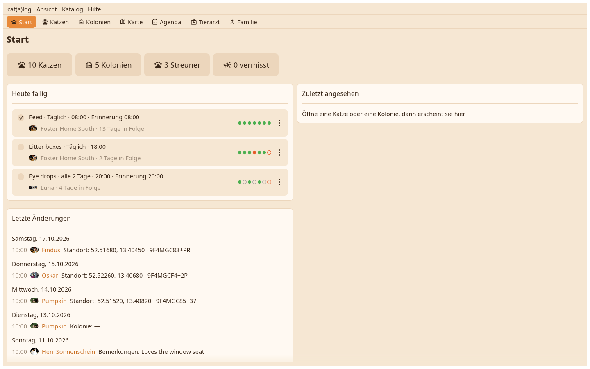

Der Schreibtisch öffnet mit Home: die Zahlen, was heute ansteht mit seinen Kästchen, die letzten Änderungen und die Katze oder das Zuhause, das du zuletzt angesehen hast. Darüber die Ansichtsleiste, darüber die Menüleiste.

Ein Menü unter dem Namen der App hält Einstellungen und Beenden. Ansicht wechselt die Ansichten und zeigt Verstecktes. Katalog hält alles zum offenen Katalog: neue Kolonie, Abgleich, Aushang erfassen, Dubletten finden, Zurückgehen, Sicherungen, Wiederherstellen, Archiv, Moderation, Kataloge. Hilfe hat die Hilfe und die Über-Seite mit den Lizenzen.
Home, Katzen, Kolonien, Karte, Agenda, Tierarzt und Familie, jede mit einem Klick auf die Leiste oder mit Strg und 1 bis 7 erreichbar. Jede Ansicht öffnet mit ihrem Namen als Überschrift, dann ihre Werkzeugleiste und ihr Inhalt.
Heute fällig: die Aufgaben und Termine des Tages mit einem Kästchen, das abhakt oder abschließt. Letzte Änderungen: wer was änderte, nach Tag. Zuletzt angesehen: die letzten sieben Katzen und Zuhause, ein Klick öffnet eines.